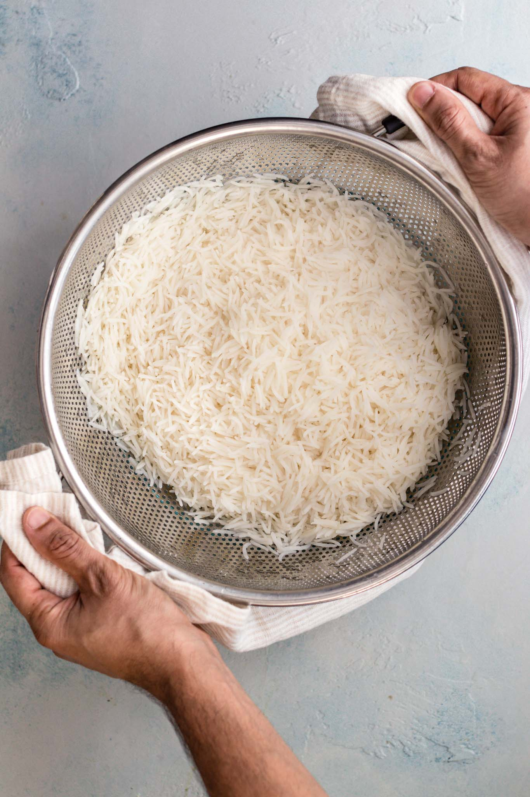

BIRYANI RECIPE:
 Behold! An authentic Chicken Biryani recipe with simple, easy-to-follow instructions
Behold! An authentic Chicken Biryani recipe with simple, easy-to-follow instructions
(no curveballs!) and mouthwatering, traditional Pakistani and Indian flavor. This recipe includes
tips on how to get fluffy rice,tender chicken, and the distinct biryani taste. Tested to perfection!
What is Biryani?
Biryani is an intricate rice dish made with layers of curried meat and rice.
Given its use of adornments and luxurious finishes, it’s no surprise that biryani
has roots in Persian cuisine.
There are two main methods of making biryani:
- Kachi (raw) biryani, made with raw meat and parboiled rice and cooked together, and
- Pakki (cooked) biryani, in which cooked meat and parboiled rice are steamed together.

In Pakistan, pakki (or cooked) biryani is most common, with several prominent varieties such as Sindhi,
Karachi-style, and Bombay biryani. This recipe is an amalgamation of these styles and is similar to what
you’d find at a typical Pakistani or Indian restaurant or dinner party.
NOTES ON THE INGREDIENTS FOR CHICKEN BIRYANI
-
Oil/Ghee:I’ve used oil for fluidity and ghee for taste.
-
Onions:You can either thinly slice them (more traditional) or finely chop. If
using a food processor to do this, pulse to chop so that it doesn’t blend into a
paste.
-
Bone-in, cut up, skinless chicken:I buy pre-cut up pieces of a whole chicken,
but bone-in chicken thighs work too. You can also use boneless chicken, though
it may require a shorter cooking time.
-
Whole spices:A generous amount of whole spices are a distinct characteristic
of biryani. Whole spices are meant to be discarded while eating, but if you
don’t want to bite into them, feel free place them in a spice/muslin bag.
-
Garlic + Ginger:I’ve given their quantities in whole form and tablespoons. I use
a mortar and pestle or a food processor to crush them.
-
Tomatoes:Since biryani has lots of sour ingredients like yogurt, dried plums (alu
Bukhara), and lemon, I’ve found keeping the tomatoes to a minimum gives it
just the right amount of tang.
-
Yogurt:Not only does a yogurt marinade make the chicken more tender and
flavorful, but it also makes cooking the biryani much smoother. For a dairy-free
option, try using coconut milk.
-
Rice: I suggest using aged, long-grain basmati rice you can find at some grocery
stores, any Indian/Pakistani specialty store, or online.
-
Dried Plums (Alu Bukhara): I always cherish the helping of biryani with these
sweet surprises. Alu Bukhara are often used in biryani to give a sweet, tangy
taste. They’re usually available at South Asian grocery stores, but if you can’t
find them, you can either substitute with dried prunes or omit.
HOW TO MAKE CHICKEN BIRYANI - 3 MAIN STEPS
I believe this recipe is as easy as an authentic biryani recipe can be – no superfluous
or tedious steps that don’t contribute to big flavor. You’ll find that while it takes
time, most of it is passive cooking time. And the end result is quite rewarding and
impressive. These are 3 parts to making chicken biryani:
- Step 1: Prepare the chicken curry.
Prepare the biryani masala (or use store-bought) and marinate the chicken.
Cook the chicken curry. While it’s cooking over low heat, prepare the rice.

-
Step 2: Parboil the rice.
Bring a pot of water to a boil and parboil the rice. Drain and set aside.

-
Step 3: Bring it all together for a final steam (‘dum‘).
Layer half of the rice, all of the chicken, and then the remaining rice on top. Add
the finishing touches.
Allow steam to develop, then lower the heat and let the flavors meld.

BIRYANI MASALA
Pakistani biryani is heavy on spice (and flavor!), and is often made with biryani
masala, or simply put, a medley of spices that come together to give it a distinct,
masaledar (or spice-laden) taste.
I recommend you use the biryani masala recipe below (all you need is a good spice
grinder and a few extra whole spices). If you’d prefer not to, you can substitute your
favorite store-bought biryani masala. This recipe has been tested and works great
with Bombay Biryani Masala.
To make Biryani masala for this recipe, combine the following ingredients in a spice
grinder and process until mostly smooth. Makes ~2 tbsp, which is the exact quantity
you’ll need for this recipe.
- 1 medium dried bay leaf (tez patta)
- 2 dried button red chili peppers (sukhi lal mirch)
- 1 small whole mace (javetri)
- 1 2-inch cinnamon stick (daarchini)
- 4-5 whole cloves (loung)
- 1 black cardamom (badi elaichi)
- 1 star anise (baadiyan)
- 3-4 green cardamom pods (elaichi)
- 1 tsp roasted cumin seeds or black cumin seeds (shahzeera)
- 1/2 tsp black peppercorns (kaali mirch)
- 1/4 tsp fennel (saunf)
- 1/4 tsp carom seeds (ajwain)
INGREDIENTS
- 1 1/4 lbs (567 g) bone-in, cut up, skinless
chicken, cleaned and excess skin removed
Marinade
- 1/2 cup (115 g) plain whole milk yogurt
- 1 tbsp neutral oil
- 2 tbsp biryani masala (recipe in post)
- 1 tsp coriander powder
- 1/2 tsp cumin powder
- 1/2 tsp cumin powder
- 1/2-1 tsp red chili powder, start with 1/2 tsp if using store-bought biryani masala
- 1/4 tsp turmeric powder
- 1/4 tsp nutmeg powder
- pinch cane sugar, omit if using store-bought biryani masala
- 2 tsp kosher salt, start with 1 ¼ tsp if using store-bought biryani masala
Whole Spices
- 3 medium dried bay leaves, (tez patta)
- 5-6 whole cloves, (loung)
- 4-5 whole black cardamoms, (badi elaichi)
- 6 star anise, (badiyaan)
- 2 3-inch cinnamon sticks, (daarchini)
- 6 green cardamom pods, (elaichi)
- 3/4 tsp cumin seeds, (zeera)
- 1/2 tsp whole black peppercorns, (kaali mirch)
Parboiled Rice
- 1 3/4 cups (~325-350 g) aged, long grain basmati rice
- 1 1/2 tbsp kosher salt
- 1 tbsp oil
- 1 tsp lemon juice or vinegar
Biryani
- 1/4 cup neutral oil, plus more as needed
- 2 tbsp ghee, or sub butter
- 2 (~400 g) medium yellow onions, thinly
sliced or finely chopped
- 6-8 (1 tbsp heaped) garlic cloves , crushed
- 1- inch (1 tbsp heaped) ginger, crushed
- 1 (75-80 g) small tomato, finely chopped
- 1-2 small green chili peppers (such as Thai
or Serrano), chopped
- 5 dried plums , (alu bukhara)
- 1/3 – 1/2 tsp kosher salt
- 1 tsp garam masala, may omit if using store-bought biryani masala
- 1/2 tsp red chili flakes, optional
- 1 tsp kewra essence, depending on strength
- 1 tsp lemon juice
Layering/Topping
- 1/2 tsp chaat masala or garam masala
- 1 tbsp oil
- 1/4 cup cilantro leaves, chopped
- 1-2 tbsp mint leaves, chopped (or sub
more cilantro)
- 1/8 tsp yellow/orange food coloring mixed
with 1 tbsp milk or water
- 1 (5-7 slices) lemon, thinly sliced
For Serving
- Cucumber/Vegetable Raita, or
- Cilantro/Mint Raita (Yogurt Chutney)
INSTRUCTIONS
- In a medium bowl, combine the chicken with the ingredients listed under
‘marinade’. Cover and set aside
or refrigerate (ideally) up to overnight. When
ready to use, allow the chicken to come to room
temperature.
- Thoroughly wash the rice and soak it in water. Set aside.
- Heat a large, heavy bottomed pan over
high heat. Add the oil, ghee, and onions
and sauté until the onions are golden
(~15-20 minutes). Deglaze the pan with ¼
cup water. Once the water dries up, add
the whole spices, garlic, and ginger and
sauté for another 2 minutes.
- Add the chicken with its marinade and
sauté until it changes color (~2-3
minutes). Add the tomatoes, green chili
pepper, and dried plum (alu bukhara) and stir to coat. Add ½ cup water (the
water should cover about 1/3 of the chicken) and bring to a gentle boil.
- Turn the heat down to a gentle simmer (this is low heat on my stovetop), cover
, and allow the chicken to cook for 30 minutes, stirring midway. While the chicken
is cooking, proceed to the next step. Turn off the heat once the chicken has
cooked.
- Meanwhile, prepare the rice. Place a medium pot over high heat and bring 7
cups (1.75 quarts) of water to a boil (See Tip). Add salt, oil, and lemon
juice/vinegar and stir. Once the water comes to a boil, drain and add the rice.
Stir, and bring it back up to a boil. Once it comes to a boil again, boil for 5
minutes (no more than 5 minutes and 30 seconds), or until the rice is just
cooked with a bite to it. It shouldn’t get mushy when pressed between your
fingers. (See Note 1) Drain
and set aside.
- Uncover the chicken. Raise the heat to medium-high to sauté out any excess
water for 2-3 minutes. Add salt, garam masala, and red chili flakes for more heat
(if desired). The oil will have separated from the ‘masala’. Turn off the heat. Add
kewra water and lemon juice and stir to combine.
Steaming ('Dum')
- If needed, lightly oil the bottom of
a dutch oven or stock/soup pot. Layer half of
the drained rice.
Sprinkle 1/4 tsp of the chaat/garam masala on top of the rice.
Add in all the chicken, and top with the remaining rice. Sprinkle the remaining
1/4 tsp of chaat/garam masala. Drizzle in the colored milk and oil. (Optional:
Sprinkle a pinch of food coloring directly for more variation in color.) Sprinkle
the cilantro leaves and mint leaves, and arrange the lemon slices on top.
- If your pan isn’t heavy bottomed, place a heat diffuser, flat griddle, or tava
underneath the pan to diffuse the heat. Layer the lid with a kitchen cloth (or
aluminum foil) and seal tightly. (See Note 2) Turn on the heat to medium and
allow the biryani to develop steam for 4-5 minutes. You’ll be able to feel the
steam starting to escape the sides. Then turn down to the lowest heat and allow
it to cook in its steam (‘dum’) for 20 minutes. Turn off the heat and allow the
biryani to rest with the lid on for 10 minutes. Do not stir or mix. To serve, gently
move on to platter with rice paddle or small plate. Serve hot with yogurt or raita.